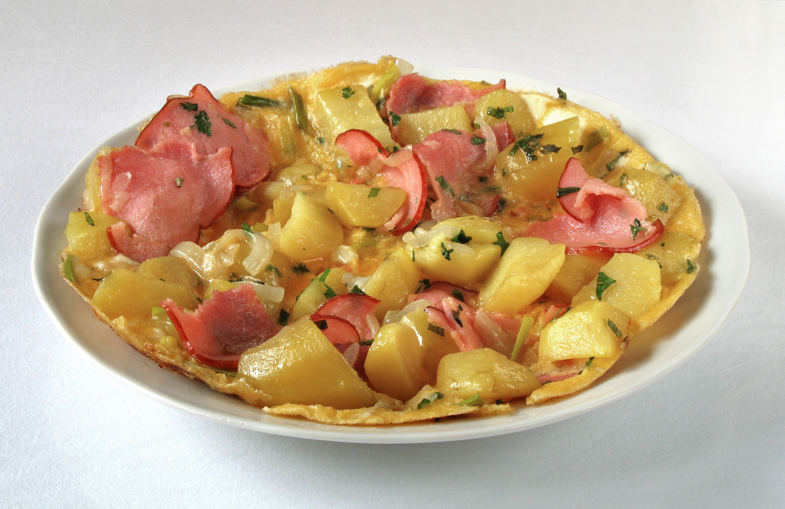

Farmer's Breakfast

Description
A traditional, hearty German skillet dish originally designed to provide
sustained energy for agricultural labor. Despite its name, it is commonly
enjoyed for breakfast, brunch, lunch, or dinner and serves as a practical
way to utilize leftover ingredients.
Ingredients
- 2 large waxy potatoes, diced
- 1/2 a white onion, diced
- 1 tbsp of butter
- 4 slices of streaky bacon
- 4 eggs
- 1/2 cup of milk
- Finely chopped chives and cottage cheese to serve
Steps
-
Place a medium frypan over medium heat, add butter and diced potatoes.
Cook, tossing until softened and browned on the outside. About 10
minutes. Adjust heat to avoid burning.
-
Add the onion and bacon and toss through, cook for a few minutes to
render some of the bacon fat and soften the onion.
-
In a small bowl whisk eggs and milk, season with salt and pepper. Add to
the pan with potatoes and bacon. Stir gently until half set then stop
stirring and allow to cook through.
- Serve with chives and cottage cheese.
Home